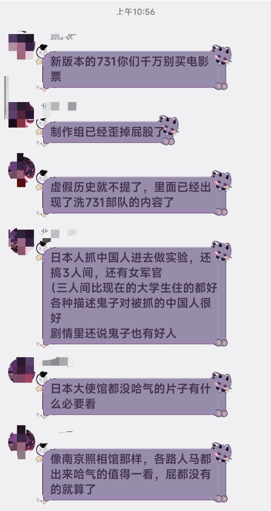
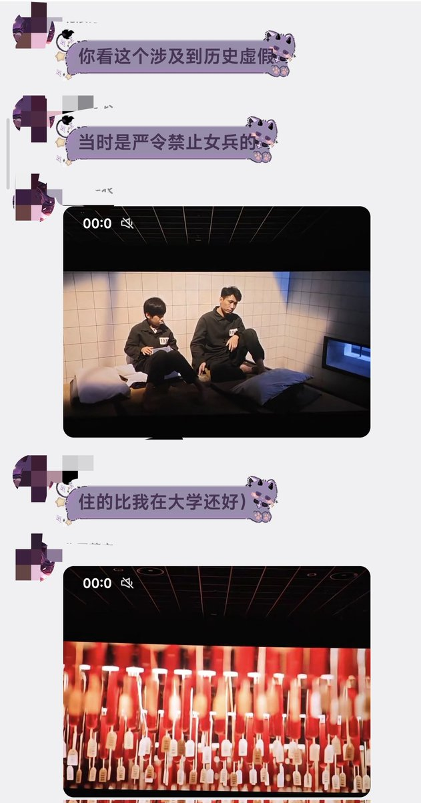
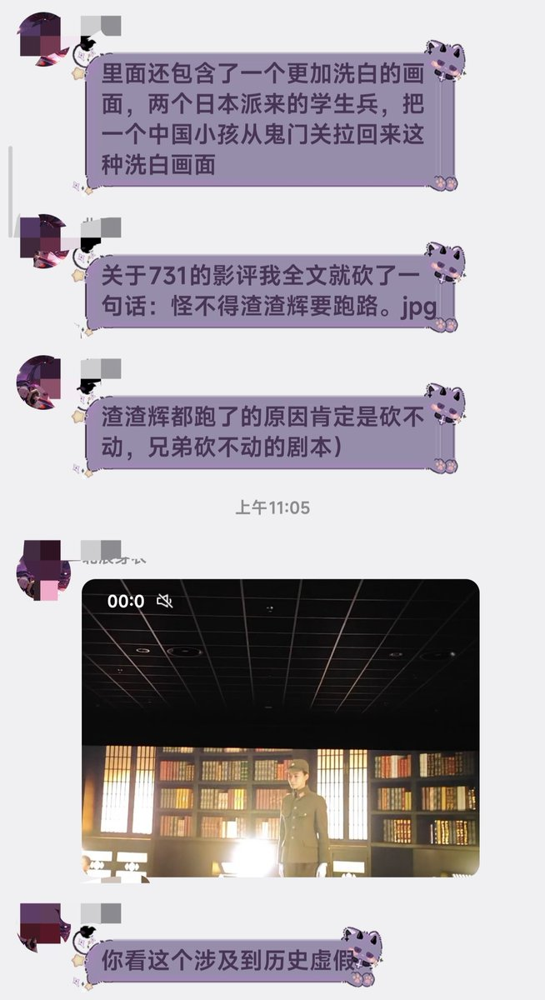

月影独下
@tadatsukiei
实在不行就拜托日本人拍吧，人家对战争的反思可比牢中深刻多了……



🌹Jawen🌹（淡推中）
@JawenZhu
《731》观众评价，鉴定为纯纯圈钱烂货！粗制滥造网剧质感，里面场景新的像上周刚发生的事，之前还不断标题党式营销制造话题和热度，不仅官媒为其宣传，甚至专门挑在918这天上映，看看接下来如何收尾吧🤣 https://t.co/UFppoLgXu1